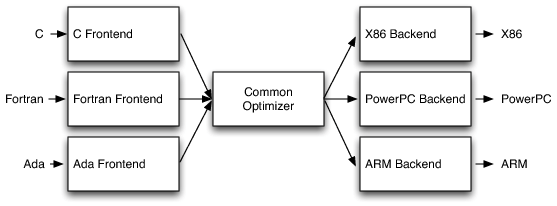
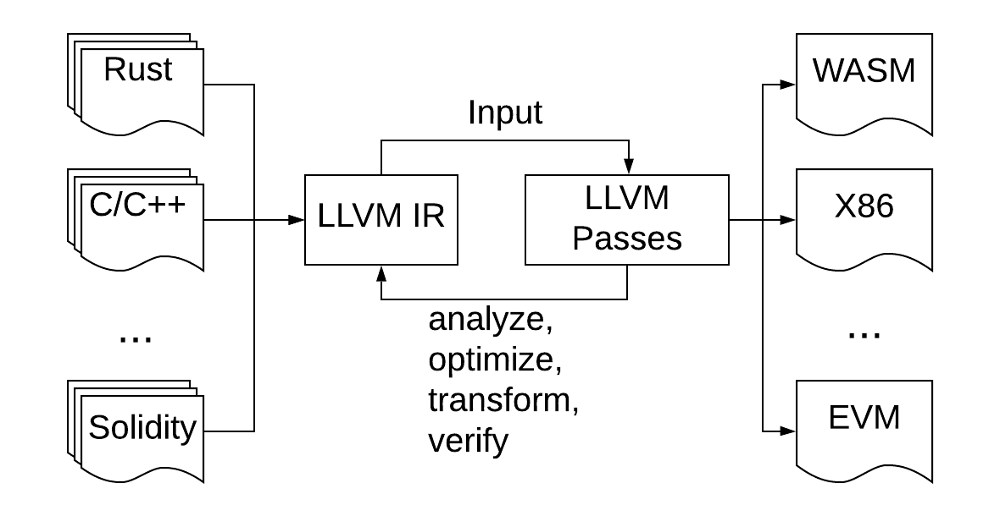
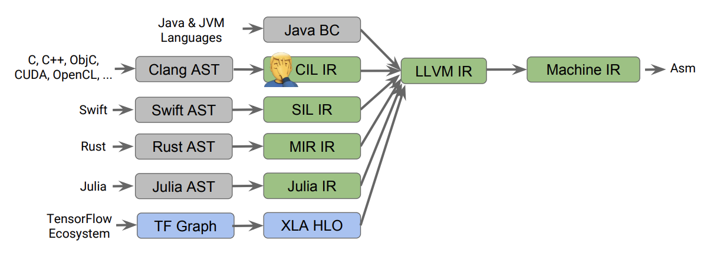

Synopsis
- What is EVM LLVM project
- Impacts to Ethereum community
- Engineering details
- Demo
EVM LLVM: What is it?
- A new LLVM-based compiler backend
targeting EVM architecture
- But ... what is LLVM?
LLVM is:

A retargetable, multiple source compiler framework
Many projects/components are built around it
LLVM compiler infrastructure

- Core components: LLVM IR, LLVM Passes

Graph source
- De facto the standard of open source code generation framework
- Ecosystem includes lots of helpful tools
Why does Ethereum family need LLVM?
LLVM brings to Ethereum:
- A developer-friendly toolchain ecosystem
- Future-proof development environment
- Better performance
Impacts to the blockchain
- More programming languages possible
- Rust, Golang, C/C++, OCaml ...
- A whole ecosystem for developer tools
- optimizer, analyzer, REPL, ...
- Long term community support
- Gas efficiency
A future-proof development toolchain
- Strong and mature ecosystem support
- Supports current and future EVMs
- Migration to Ethereum Classic made easy
- Migration to next-gen engine made easy
What can EVM LLVM be used for?
- As a standalone smart contract ...
- compiler, analyzer, optimizer, verifier, ...
- As a library component for a SDK
Project Status
- Pre-Alpha Stage
- Collaboration
- Second State's SOLL
- LLVM-based Solidity toolchain
EVM LLVM: Engineering Details (1)
- Based on LLVM 10.0.dev
- 256 bit support
- 256 bit support exposed to langauge frontends
- Narrower-width data types are expanded internally
- EVM-specific opcodes exposed as intrinsics
- Such as: BLOCKHASH, CALLER, GASPRICE, ...
- Stackifier
- generic optimization passes on register-based opcodes
- Converts register-based opcodes to stack opcodes
EVM LLVM: Engineering Details (2)
- EVM-specific optimizations (planned)
- Stack manipulation scheduler
- Gas consumption optimizations
- Contract ABI generation
- Currently relies on frontend
- Compatible with existing tools
Demo
Utilizing Second State's SOLL frontend
end of presentation
Thank you